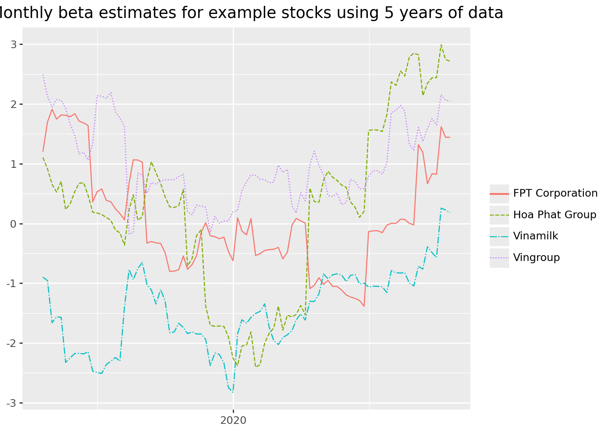
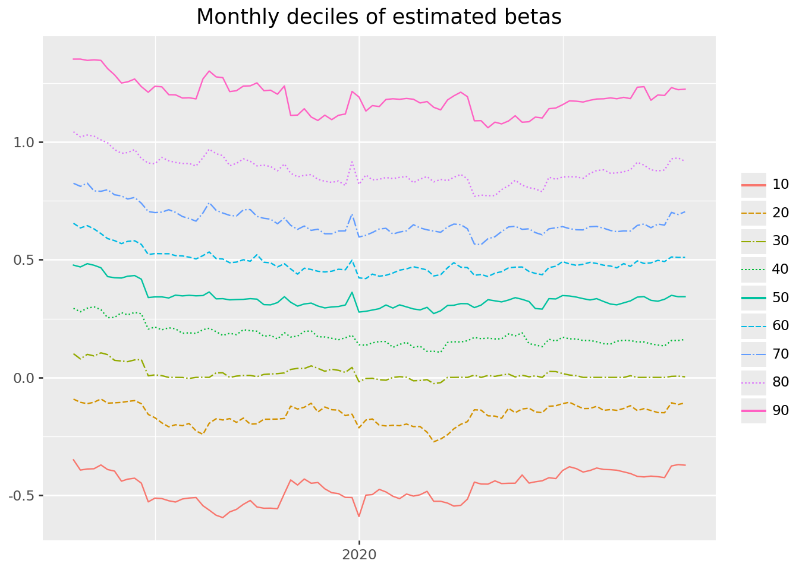

import pandas as pd
import numpy as np
import sqlite3
import statsmodels.formula.api as smf
from plotnine import *
from mizani.formatters import percent_format
from joblib import Parallel, delayed, cpu_count
from itertools import product
from dateutil.relativedelta import relativedelta9 Beta Estimation
In this chapter, we introduce an important concept in financial economics: The exposure of an individual stock to changes in the market portfolio. According to the Capital Asset Pricing Model (CAPM) of Sharpe (1964), Lintner (1965), and Mossin (1966), cross-sectional variation in expected asset returns should be a function of the covariance between the excess return of the asset and the excess return on the market portfolio. The regression coefficient of excess market returns on excess stock returns is usually called the market beta. We show an estimation procedure for the market betas. We provide details about all the functions that we use to compute the results. In particular, we leverage useful computational concepts: Rolling-window estimation and parallelization.
We use the following Python packages throughout this chapter:
Compared to previous chapters, we introduce statsmodels (seabold2010statsmodels?) for regression analysis and for sliding-window regressions and joblib (joblib?) for parallelization.
9.1 Estimating Beta Using Monthly Returns
The estimation procedure is based on a rolling-window estimation, where we may use either monthly or daily returns and different window lengths. First, let us start with loading the monthly Stock data from our SQLite database introduced in Accessing and Managing Financial Data and DataCore.
tidy_finance = sqlite3.connect(database="data/tidy_finance_python.sqlite")
# Prepare accounting data with a 'year' column for merging
comp_vn = (pd.read_sql_query(
sql="SELECT symbol, datadate, icb_name_vi FROM comp_vn",
con=tidy_finance,
parse_dates={"datadate"})
.assign(year=lambda x: x["datadate"].dt.year)
.dropna()
)
# Ensure prices_monthly has a 'year' column and is merged correctly
prices_monthly = (pd.read_sql_query(
sql="SELECT symbol, date, ret_excess FROM prices_monthly",
con=tidy_finance,
parse_dates={"date"})
.assign(year=lambda x: x["date"].dt.year)
)
factors_ff3_monthly = pd.read_sql_query(
sql="SELECT date, mkt_excess FROM factors_ff3_monthly",
con=tidy_finance,
parse_dates={"date"}
)
prices_monthly = (prices_monthly
.merge(factors_ff3_monthly, how="left", on="date")
.merge(comp_vn, how="left", on=["symbol", "year"])
.dropna()
)from scipy.stats.mstats import winsorize
# Apply 1% winsorization to returns
prices_monthly = (prices_monthly
.assign(
ret_excess = lambda x: winsorize(x["ret_excess"], limits=[0.01, 0.01]),
mkt_excess = lambda x: winsorize(x["mkt_excess"], limits=[0.01, 0.01])
)
)To estimate the CAPM regression coefficients
\[ r_{i, t} - r_{f, t} = \alpha_i + \beta_i(r_{m, t}-r_{f,t})+\varepsilon_{i, t}, \tag{9.1}\]
we regress stock excess returns ret_excess on excess returns of the market portfolio mkt_excess.
Python provides a simple solution to estimate (linear) models with the function smf.ols(). The function requires a formula as input that is specified in a compact symbolic form. An expression of the form y ~ model is interpreted as a specification that the response y is modeled by a linear predictor specified symbolically by model. Such a model consists of a series of terms separated by + operators. In addition to standard linear models, smf.ols() provides a lot of flexibility. To start, we restrict the data only to the time series of observations in Stock data that correspond to a company’s stock and compute \(\hat\alpha_i\) as well as \(\hat\beta_i\).
model_fit = smf.ols(
formula="ret_excess ~ mkt_excess",
data=prices_monthly.query("symbol == 'VIN'")
).fit()
coefficients = model_fit.summary2().tables[1]
coefficients| Coef. | Std.Err. | t | P>|t| | [0.025 | 0.975] | |
|---|---|---|---|---|---|---|
| Intercept | 0.015495 | 0.016506 | 0.938751 | 0.349934 | -0.017220 | 0.048210 |
| mkt_excess | 3.133326 | 1.865697 | 1.679440 | 0.095931 | -0.564424 | 6.831076 |
smf.ols() returns an object of class RegressionModel, which contains all the information we usually care about with linear models. summary2() returns information about the estimated parameters. The output above indicates that Apple moves excessively with the market as the estimated \(\hat\beta_i\) is above one (\(\hat\beta_i \approx 1.4\)).
9.2 Rolling-Window Estimation
After we estimated the regression coefficients on an example, we scale the estimation of \(\beta_i\) to a whole different level and perform rolling-window estimations for the entire CRSP sample. The following function implements the CAPM regression for a data frame (or a part thereof) containing at least min_obs observations to avoid huge fluctuations if the time series is too short. The function conveniently returns the regression results as a data frame, which ensures that our approach is scalable. If the min_obs-condition is violated, that is, the time series is too short, the function returns an empty data frame for consistency.
def estimate_capm(data, min_obs=1):
if data.shape[0] < min_obs:
capm = pd.DataFrame()
else:
fit = smf.ols(formula="ret_excess ~ mkt_excess", data=data).fit()
coefficients = fit.summary2().tables[1]
capm = pd.DataFrame(
{
"coefficient": coefficients.index,
"estimate": coefficients["Coef."],
"t_statistic": coefficients["t"],
}
).assign(
coefficient=lambda x: np.where(
x["coefficient"] == "Intercept", "alpha", x["coefficient"]
)
)
return capmNext, we define a function that does the rolling estimation. We use a simple for-loop to implement the sliding window estimation in a straightforward manner. The following function takes input data and slides across the date vector, considering only a total of look_back months. The function essentially performs three steps: (i) arrange all rows, (ii) compute betas by sliding across months, and (iii) return a tibble with dates and corresponding parameter estimates. As we demonstrate further below, we can also apply the same function to daily return data.
def roll_capm_estimation(data, look_back=60, min_obs=48):
results = []
dates = data["date"].sort_values().drop_duplicates()
for i in range(look_back - 1, len(dates)):
end_date = dates.iloc[i]
start_date = end_date - relativedelta(months=look_back - 1)
window_data = data.query("date >= @start_date & date <= @end_date")
result = estimate_capm(window_data, min_obs=min_obs)
result["date"] = np.max(window_data["date"])
results.append(result)
if results:
rolling_capm_estimation = pd.concat(results, ignore_index=True)
else:
rolling_capm_estimation = pd.DataFrame()
return rolling_capm_estimationBefore we approach the whole Stock sample, let us focus on a couple of examples for well-known firms.
examples = pd.DataFrame({
"symbol": ["FPT", "VNM", "VIC", "HPG"],
"company": ["FPT Corporation", "Vinamilk", "Vingroup", "Hoa Phat Group"]
})# Check how many months of data each example firm has
(prices_monthly
.query("symbol in @examples['symbol']")
.groupby("symbol")
.size()
.reset_index(name="obs_count")
)
prices_monthly[prices_monthly['symbol'] == "FPT"]| symbol | date | ret_excess | year | mkt_excess | datadate | icb_name_vi | |
|---|---|---|---|---|---|---|---|
| 41646 | FPT | 2011-07-31 | 0.194583 | 2011 | -0.011287 | 2011-12-31 | Công nghệ phần mềm |
| 41647 | FPT | 2011-08-31 | -0.038116 | 2011 | 0.007856 | 2011-12-31 | Công nghệ phần mềm |
| 41648 | FPT | 2011-09-30 | -0.093421 | 2011 | -0.006501 | 2011-12-31 | Công nghệ phần mềm |
| 41649 | FPT | 2011-10-31 | -0.042168 | 2011 | -0.005363 | 2011-12-31 | Công nghệ phần mềm |
| 41650 | FPT | 2011-11-30 | -0.011414 | 2011 | -0.009524 | 2011-12-31 | Công nghệ phần mềm |
| ... | ... | ... | ... | ... | ... | ... | ... |
| 41791 | FPT | 2023-08-31 | 0.113277 | 2023 | 0.004178 | 2023-12-31 | Công nghệ phần mềm |
| 41792 | FPT | 2023-09-30 | -0.043664 | 2023 | -0.000150 | 2023-12-31 | Công nghệ phần mềm |
| 41793 | FPT | 2023-10-31 | -0.108937 | 2023 | -0.024628 | 2023-12-31 | Công nghệ phần mềm |
| 41794 | FPT | 2023-11-30 | 0.103896 | 2023 | -0.009693 | 2023-12-31 | Công nghệ phần mềm |
| 41795 | FPT | 2023-12-31 | 0.042369 | 2023 | -0.000822 | 2023-12-31 | Công nghệ phần mềm |
150 rows × 7 columns
The main idea is to apply the function to each stock individually and then combine the results into a single data frame. First, we nest the data by symbol. Nested data means we now have a list of symbol with corresponding grouped time series data. We get one row of output for each unique combination of non-nested variables which is only symbol in this case.
capm_examples_nested = (prices_monthly
.query("symbol in @examples['symbol']")
.groupby("symbol", group_keys=True)
)
capm_examples_nested<pandas.api.typing.DataFrameGroupBy object at 0x7fe4337e7250>Next, we want to apply the roll_capm_estimation() function to each stock. This situation is an ideal use case for apply(), which takes a list or vector as input and returns an object of the same length as the input. In our case, apply() returns a single data frame with a time series of beta estimates for each stock. Therefore, we use reset_index() to transform the list of outputs to a tidy data frame.
# use this after fixing the data
capm_examples = (capm_examples_nested
.apply(lambda x: roll_capm_estimation(x), include_groups=False)
.reset_index()
.get(["symbol", "date", "coefficient", "estimate", "t_statistic"])
)Figure 9.1 displays the resulting beta estimates, focusing exclusively on the coefficient fo "mkt_excess".
beta_examples_sub = capm_examples.merge(examples, how="left", on="symbol").query(
"coefficient == 'mkt_excess'"
)
beta_figure = (
ggplot(
beta_examples_sub,
aes(x="date", y="estimate", color="company", linetype="company"),
)
+ geom_line()
+ labs(
x="",
y="",
color="",
linetype="",
title="Monthly beta estimates for example stocks using 5 years of data",
)
+ scale_x_datetime(date_breaks="5 year", date_labels="%Y")
)
beta_figure.show()

9.3 Parallelized Rolling-Window Estimation
Even though we could now just apply the function using .groubby() on the whole Stock sample, we advise against doing it as it is computationally quite expensive. Remember that we have to perform rolling-window estimations across all stocks and time periods. However, this estimation problem is an ideal scenario to employ the power of parallelization. Parallelization means that we split the tasks which perform rolling-window estimations across different workers (or cores on your local machine).
If you have a Windows or Mac machine, it makes most sense use the default parallelization backend of joblib, which means that separate Python processes are running in the background on the same machine to perform the individual jobs. If you check out the documentation of joblib.parallel_config(), you can also see other ways to resolve the parallelization in different environments. Note that we use availableCores() to determine the number of cores available for parallelization, but keep one core free for other tasks. Some machines might freeze if all cores are busy with Python jobs.
n_cores = cpu_count() - 1
n_cores3You can speed up things considerably by having more cores available to share the workload or by having more powerful cores. Instead of using .apply() on groups, we use Parallel() to execute multiple tasks concurrently and delayed() to wrap each function call, allowing the calls to be queued and distributed to worker processes rather than executed immediately.
prices_monthly_nested = (prices_monthly
.groupby("symbol", group_keys=False)
)
capm_monthly = pd.concat(
Parallel(n_jobs=n_cores)(
delayed(
lambda name, group: roll_capm_estimation(group).assign(symbol=name)
)(
name, group
)
for name, group in prices_monthly_nested
)
).get(["symbol", "date", "coefficient", "estimate", "t_statistic"])
capm_monthly(capm_monthly
.to_sql(name="capm_monthly",
con=tidy_finance,
if_exists="replace",
index=False)
)capm_monthly = pd.read_sql_query(
sql="SELECT * FROM capm_monthly",
con=tidy_finance,
parse_dates={"date"}
)
capm_monthly.head()| symbol | date | coefficient | estimate | t_statistic | |
|---|---|---|---|---|---|
| 0 | A32 | 2023-10-31 | alpha | -0.003802 | -0.735962 |
| 1 | A32 | 2023-10-31 | mkt_excess | 0.685640 | 1.218415 |
| 2 | A32 | 2023-11-30 | alpha | -0.003740 | -0.721261 |
| 3 | A32 | 2023-11-30 | mkt_excess | 0.674715 | 1.205106 |
| 4 | A32 | 2023-12-31 | alpha | -0.003796 | -0.734142 |
9.4 Estimating Beta Using Daily Returns
Before we provide some descriptive statistics of our beta estimates, we implement the estimation for the daily CRSP sample as well. Depending on the application, you might either use longer horizon beta estimates based on monthly data or shorter horizon estimates based on daily returns. As loading the full daily CRSP data requires relatively large amounts of memory, we split the beta estimation into smaller chunks. The logic follows the approach that we use to download the daily CRSP data (see WRDS, CRSP, and Compustat).
First, we load the daily Fama-French market excess returns and extract the vector of dates.
factors_ff3_daily = pd.read_sql_query(
sql="SELECT date, mkt_excess FROM factors_ff3_daily",
con=tidy_finance,
parse_dates={"date"}
)We use the stocks from the monthly Stock dataset as our reference point and process them in batches of 500. To estimate the CAPM over a consistent lookback window while accommodating different return frequencies, we adjust the minimum required number of observations accordingly. Specifically, we require at least 1,000 daily returns over a five‑year period for a valid estimation. This threshold is consistent with the monthly requirement of 48 observations out of 60 months, given that there are roughly 252 trading days in a year.
symbols = list(prices_monthly["symbol"].unique().astype(str))
batch_size = 500
batches = np.ceil(len(symbols)/batch_size).astype(int)
min_obs = 1_000We then proceed to perform the same steps as with the monthly Stock data, just in batches: Load in daily returns, nest the data by stock, and parallelize the beta estimation across stocks. Note that we also convert the daily date to the beginning of the month so that we can still look back over 60 months and get one beta estimate per month, even though we are using daily data.
capm_daily = []
for j in range(1, batches+1):
symbol_batch = symbols[
((j-1)*batch_size):(min(j*batch_size, len(symbols)))
]
symbol_batch_formatted = (
", ".join(f"'{symbol}'" for symbol in symbol_batch)
)
symbol_string = f"({symbol_batch_formatted})"
prices_daily_sub_query = (
"SELECT symbol, date, ret_excess "
"FROM prices_daily "
f"WHERE symbol IN {symbol_string}"
)
prices_daily_sub = pd.read_sql_query(
sql=prices_daily_sub_query,
con=tidy_finance,
dtype={"symbol": int},
parse_dates={"date"}
)
prices_daily_sub_nested = (prices_daily_sub
.merge(factors_ff3_daily, how="inner", on="date")
.assign(
date = lambda x:
x["date"].dt.to_period("M").dt.to_timestamp()
)
.groupby("symbol", group_keys=False)
)
results = Parallel(n_jobs=n_cores)(
delayed(
lambda name, group: roll_capm_estimation(group, min_obs=min_obs).assign(symbol=name)
)(
name, group
)
for name, group in prices_daily_sub_nested
)
if results:
capm_daily_sub = pd.concat(results).get(
["symbol", "date", "coefficient", "estimate", "t_statistic"]
)
capm_daily.append(capm_daily_sub)
else:
print(f"Warning: Batch {j} produced no results (insufficient data)")
print(f"Batch {j} out of {batches} done ({(j/batches)*100:.2f}%)\n")
capm_daily = pd.concat(capm_daily)9.5 Comparing Beta Estimates
What is a typical value for stock betas? First, let us extract the relevant estimates from our CAPM results based on monthly returns.
beta_monthly = (capm_monthly
.query("coefficient == 'mkt_excess'")
.get(["symbol", "date", "estimate"])
.rename(columns={"estimate": "beta"})
.assign(return_type="monthly")
)(beta_monthly.to_sql(
name="beta_monthly",
con=tidy_finance,
if_exists="replace",
index=False
)
)71488To get some feeling, we illustrate the dispersion of the estimated \(\hat\beta_i\) across different industries and across time below. Figure 9.2 shows that typical business models across industries imply different exposure to the general market economy.
beta_industries = (beta_monthly
.merge(prices_monthly, how="inner", on=["symbol", "date"])
.dropna(subset="beta")
.groupby(["icb_name_vi", "symbol"])["beta"]
.aggregate("mean")
.reset_index()
)
industry_order = (beta_industries
.groupby("icb_name_vi")["beta"]
.aggregate("median")
.sort_values()
.index.tolist()
)
# To show the 10 industries with the highest median beta
top_10_industries = industry_order[-10:]
# To show the 10 industries with the lowest median beta
bottom_10_industries = industry_order[:10]
# Update the plot call
beta_industries_figure = (
ggplot(beta_industries, aes(x="icb_name_vi", y="beta"))
+ geom_boxplot()
+ coord_flip()
+ scale_x_discrete(limits=top_10_industries) # Use the sliced list here
+ labs(title="Top 10 Industries by Beta")
)
# beta_industries_figure = (
# ggplot(
# beta_industries,
# aes(x="icb_name_vi", y="beta")
# )
# + geom_boxplot()
# + coord_flip()
# + labs(
# x="",
# y="Beta",
# title="Firm-specific beta distributions by industry"
# )
# + scale_x_discrete(limits=industry_order)
# )
beta_industries_figure.show()
Next, we illustrate the time-variation in the cross-section of estimated betas. Figure 9.3 shows the monthly deciles of estimated betas (based on monthly data) and indicates an interesting pattern: First, betas seem to vary over time in the sense that during some periods, there is a clear trend across all deciles. Second, the sample exhibits periods where the dispersion across stocks increases in the sense that the lower decile decreases and the upper decile increases, which indicates that for some stocks the correlation with the market increases while for others it decreases. Note also here: stocks with negative betas are a rare exception.
beta_quantiles = (
beta_monthly.groupby("date")["beta"]
.quantile(q=np.arange(0.1, 1.0, 0.1))
.reset_index()
.rename(columns={"level_1": "quantile"})
.assign(quantile=lambda x: (x["quantile"] * 100).astype(int))
.dropna()
)
linetypes = ["-", "--", "-.", ":"]
n_quantiles = beta_quantiles["quantile"].nunique()
beta_quantiles_figure = (
ggplot(
beta_quantiles,
aes(x="date", y="beta", color="factor(quantile)", linetype="factor(quantile)"),
)
+ geom_line()
+ labs(
x="", y="", color="", linetype="", title="Monthly deciles of estimated betas"
)
+ scale_x_datetime(date_breaks="5 year", date_labels="%Y")
+ scale_linetype_manual(
values=[linetypes[l % len(linetypes)] for l in range(n_quantiles)]
)
)
beta_quantiles_figure.show()

To compare the difference between daily and monthly data, we combine beta estimates to a single table.
beta_daily = (capm_daily
.query("coefficient == 'mkt_excess'")
.get(["symbol", "date", "estimate"])
.rename(columns={"estimate": "beta"})
.assign(return_type="daily")
)
beta = pd.concat([beta_monthly, beta_daily], ignore_index=True)To compare the difference between daily and monthly data, we combine beta estimates to a single table. Then, we use the table to plot a comparison of beta estimates for our example stocks in Figure 9.4.
beta_comparison = beta.merge(examples, how="inner", on="symbol")
beta_comparison_figure = (
ggplot(
beta_comparison,
aes(x="date", y="beta", color="return_type", linetype="return_type"),
)
+ geom_line()
+ facet_wrap("~company", ncol=1)
+ labs(
x="",
y="",
color="",
linetype="",
title="Comparison of beta estimates using monthly and daily data",
)
+ scale_x_datetime(date_breaks="10 years", date_labels="%Y")
+ theme(figure_size=(6.4, 6.4))
)
beta_comparison_figure.show()The estimates in Figure 9.4 look as expected. As you can see, it really depends on the data frequency how your beta estimates turn out because the estimates based on daily data are much smoother due to the higher number of observations in each regression.
Finally, we write the estimates to our database so that we can use them in later chapters.
(beta.to_sql(
name="beta",
con=tidy_finance,
if_exists="replace",
index=False
)
)Whenever you perform some kind of estimation, it also makes sense to do rough plausibility tests. A possible check is to plot the share of stocks with beta estimates over time. This descriptive helps us discover potential errors in our data preparation or estimation procedure. For instance, suppose there was a gap in our output where we do not have any betas. In this case, we would have to go back and check all previous steps to find out what went wrong.
return_types = pd.DataFrame({"return_type": ["monthly", "daily"]})
beta_coverage = (
prices_monthly.merge(return_types, how="cross")
.merge(beta, on=["symbol", "date", "return_type"], how="left")
.groupby(["date", "return_type"], as_index=False)
.apply(lambda x: pd.Series({"share": x["beta"].notna().sum() / len(x)}))
)
beta_coverage_figure = (
ggplot(
beta_coverage,
aes(x="date", y="share", color="return_type", linetype="return_type"),
)
+ geom_line()
+ labs(
x="",
y="",
color="",
linetype="",
title="End-of-month share of securities with beta estimates",
)
+ scale_y_continuous(labels=percent_format())
+ scale_x_datetime(date_breaks="10 year", date_labels="%Y")
)
beta_coverage_figure.show()Figure 9.5 shows no issues, as the two coverage lines track each other closely, so we can proceed to the next check.
We also encourage everyone to always look at the distributional summary statistics of variables. You can easily spot outliers or weird distributions when looking at such tables.
(beta
.groupby("return_type")["beta"]
.describe()
.round(2)
)The summary statistics also look plausible for the two estimation procedures.
Finally, since we have two different estimators for the same theoretical object, we expect the estimators to be at least positively correlated (although not perfectly as the estimators are based on different sample periods and frequencies).
(beta
.pivot_table(index=["symbol", "date"], columns="return_type", values="beta")
.reset_index()
.get(["monthly", "daily"])
.corr()
.round(2)
)Indeed, we find a positive correlation between our beta estimates. In the subsequent chapters, we mainly use the estimates based on monthly data, as most readers should be able to replicate them due to potential memory limitations that might arise with the daily data.
9.6 Key Takeaways
- CAPM betas can be estimated using rolling-window estimation and processed in parallel via
joblib. - Both monthly and daily return data can be used to estimate betas with different frequencies and window lengths, depending on the application.
- Summary statistics, visualization, and plausibility checks help to validate beta estimates across time and industries.